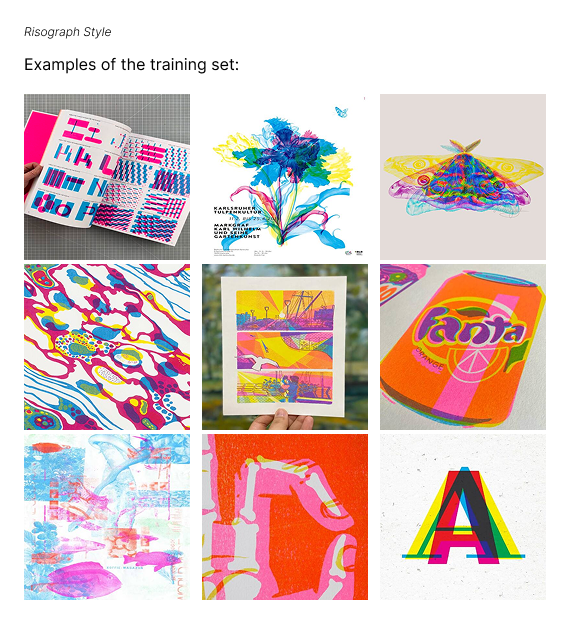
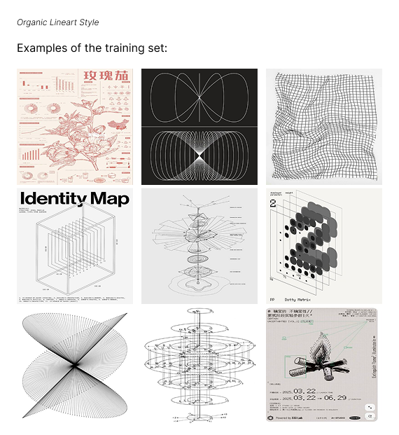
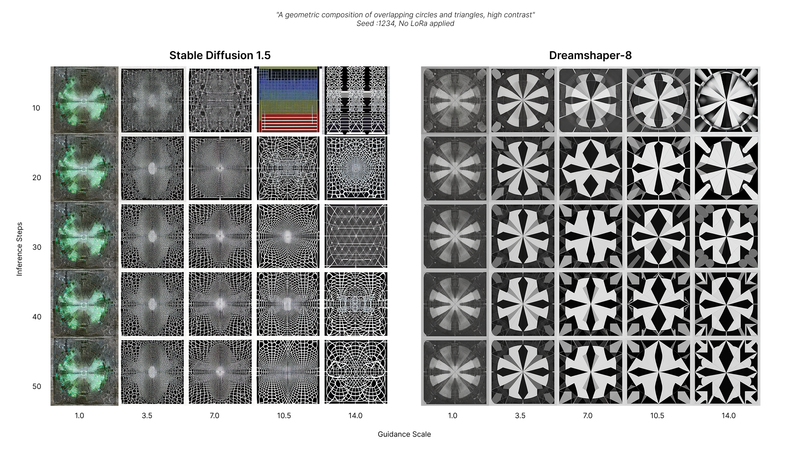
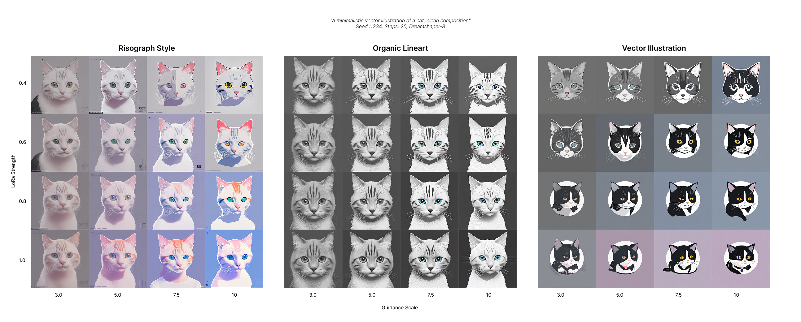
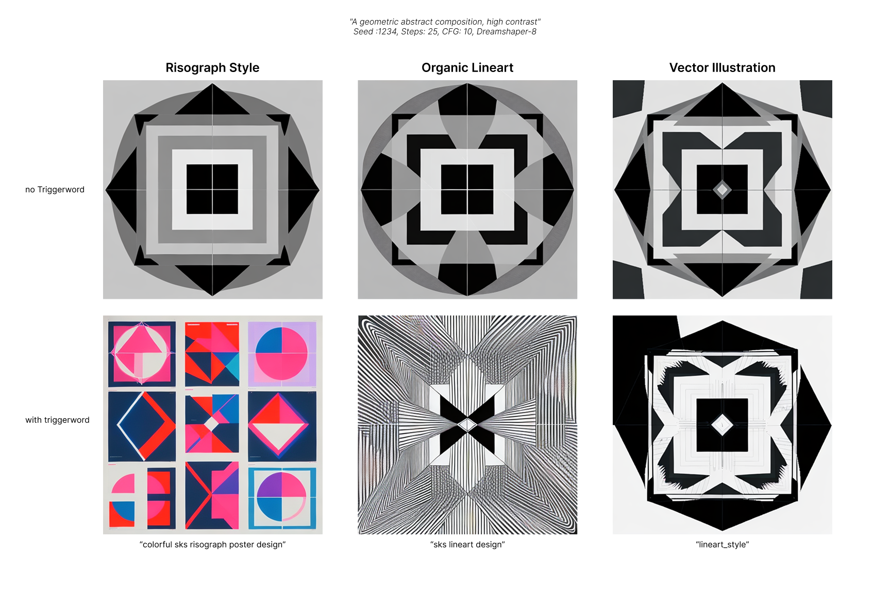

Celina Erler | Creative Coding Advanced
Graphic Design Style Exploration with Stable Diffusion 1.5
A Gradio-based image generation tool built for style comparison and LoRA training in Google Colab
Abstract
This project investigates the use of Stable Diffusion 1.5 (SD1.5) for exploring graphic design styles that are underrepresented in the model's training data. Rather than focusing on the figurative subject matter SD1.5 already handles well, such as people and animals, the goal was to test the model's capacity for more abstract, structure-driven design aesthetics. A Gradio-based web application was built in Google Colab, first establishing a stable foundation for basic text-to-image generation before extending it with custom-trained LoRA models, ControlNet (Canny) edge detection, and accessible interface labeling for non-expert users. Two original LoRAs were trained: a colorful, geometric risograph style, and a contrasting organic, thin-lined, minimalist style. An existing community-trained LoRA, offering a vector lineart style, was integrated for further comparison. The project surfaced several practical challenges, including inconsistent LoRA influence, long model-switching times, and unstable training results, one of which was repurposed as an intentional experimental style rather than discarded. The result is a working image-generation tool that makes style exploration in SD1.5 approachable for users without prior experience in generative AI.
Background
Stable Diffusion 1.5 performs reliably for figurative prompts such as people, animals, and everyday objects, but its performance drops noticeably for more abstract, structure-driven design concepts such as typography or grid-based systems. These graphic design styles are underrepresented in the model's training data, making them a natural gap to explore.
The aim of this project was to specifically develop custom LoRA models representing graphic design aesthetics that are otherwise poorly represented in the base SD1.5 model, and to package this exploration into an accessible tool for generating and comparing these styles side by side.
Approach
Before implementing more advanced features such as trained LoRAs or ControlNet-based edge detection, it was essential to establish a stable, working foundation using Gradio. A simple set of core features — a positive and negative prompt field, a function to fix or randomize the seed, and sliders for prompt strictness (CFG scale) and inference steps — were implemented and verified first, ensuring reliable image generation for both Stable Diffusion 1.5 and Dreamshaper-8 before adding further complexity.
For the custom LoRAs, a training set of approximately 35 images was used for each of two styles. The first, a risograph-inspired style, produced colorful and geometric results. The second was designed to contrast this with a more organic, thin-lined, minimalist aesthetic.


Fig. 1 — sample images from the two training sets (risograph, left; organic lineart, right).
To broaden the range of available styles and allow for comparison, an existing community-trained LoRA was also integrated into the application: lineart-lora by whitebearhands, for a vector illustration style.
Since the application was intended for users unfamiliar with image generation, labeling each function in plain, accessible language was a key design goal. Some technical terms, such as seed, were difficult to translate directly into everyday language, so short explanatory descriptions were added alongside each control for additional clarity.
Findings & Results
The application was used to generate and compare outputs across both custom-trained LoRAs and the integrated community LoRA, using a shared set of prompts and generation settings to keep comparisons consistent.
Prior to introducing any LoRA, the base capabilities of Stable Diffusion 1.5 and Dreamshaper-8 were evaluated using the abstract prompt "a geometric composition of overlapping circles and triangles, high contrast," generated across a range of guidance scale and inference step values.

Fig. 2 — output comparison between Stable Diffusion 1.5 and Dreamshaper-8 across guidance scale (1.0–14.0) and inference steps (10–50); no LoRA applied. Prompt: "a geometric composition of overlapping circles and triangles, high contrast," seed 1234.
Dreamshaper-8 produced comparatively consistent results, varying only slightly across the tested parameter range. Stable Diffusion 1.5, by contrast, exhibited pronounced artifacting, particularly at lower guidance scale values; output quality improved and stabilized as guidance scale increased.
LoRA Influences
To assess how each LoRA shapes an abstract composition, the previous procedure was repeated using a fixed prompt, seed, and inference step count (25), while varying LoRA strength and guidance scale across the three available styles: risograph, organic lineart, and vector illustration.

Fig. 3 — LoRA influence across guidance scale (3.0–10.0) and LoRA strength (0.4–1.0). Prompt: "a geometric composition of overlapping circles and triangles, high contrast," seed 1234, 25 steps.
In contrast to the base-model comparison, output variation increased markedly and the artifacting observed at low guidance scale was no longer present. The risograph LoRA produced an increasingly saturated, high-contrast palette as guidance scale increased, while the organic lineart LoRA yielded softer, less geometric, and more muted compositions. At lower LoRA strengths, the vector illustration LoRA produced results visually comparable to the organic lineart output.
A second grid was generated using identical parameters, substituting a figurative prompt to evaluate how LoRAs trained primarily on graphic design material would generalize to non-abstract subject matter.

Fig. 4 — LoRA influence across guidance scale (3.0–10.0) and LoRA strength (0.4–1.0). Prompt: "a minimalistic vector illustration of a cat, clean composition," seed 1234, 25 steps.
Of the three styles, the risograph LoRA generalized most successfully to the figurative prompt, producing semi-realistic cat portraits with minimal artifacting; color intensity increased proportionally with guidance scale and LoRA strength. The organic lineart LoRA again produced comparatively consistent, low-variance results, similar to its behavior on the abstract prompt, while the vector illustration LoRA showed the most pronounced artifacting at higher LoRA strengths.
Finally, the effect of including each LoRA's corresponding trigger word was examined. Even at full LoRA strength, omitting the trigger word resulted in a substantial shift in both style fidelity and output quality relative to prompts that included it.

Fig. 5 — output comparison with and without trigger word, at full LoRA strength. Prompt: "a geometric abstract composition, high contrast," seed 1234, 25 steps, guidance scale 10, Dreamshaper-8.
Canny Edge Implementation
To evaluate structural fidelity under spatial conditioning, ControlNet (Canny edge) was applied using three reference images of varying subject complexity, an architectural interior, a portrait, and a macro photograph of a butterfly, across each LoRA style.

Fig. 6 — ControlNet (Canny) outputs across LoRA styles and reference images. Prompt: "abstract, geometric composition," seed 42, 25 steps, guidance scale 12.0, Dreamshaper-8.
The three reference images were selected to span a range of subject complexity, allowing comparison of how each LoRA responds to structural guidance. Consistent with earlier results, the risograph LoRA remained the most visually distinct, applying saturated color and blocky geometric forms to both the portrait and butterfly references. The organic lineart and vector illustration LoRAs performed comparably to one another, producing more elaborate imagery when guided by the architectural interior reference, but showing reduced fidelity in reconstructing the butterfly's fine wing structure.
Experience & Difficulties
- Integrating the LoRAs did not work on the first attempt; getting torchao set up correctly required additional troubleshooting.
- Several rounds of LoRA training were needed before usable results were achieved.
- Initially, the LoRAs had only a minor effect on the output; introducing specific trigger keywords into the prompt significantly improved their influence.
- Naming interface functions in a way that felt intuitive to non-technical users proved more difficult than expected.
- Switching between base models caused long load times, which was resolved by pre-loading models in advance.
The organic, thin-lined LoRA initially produced distorted results once training was complete, and it was seriously considered for removal from the project. However, further experimentation revealed that setting the prompt strictness very high produced unexpectedly compelling results with this style. Rather than discarding it, this LoRA was kept in the final style list as an intentional experimental option.